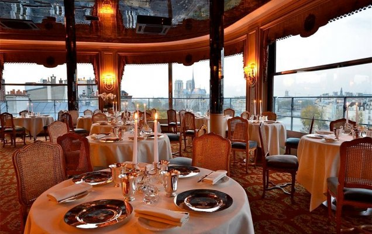
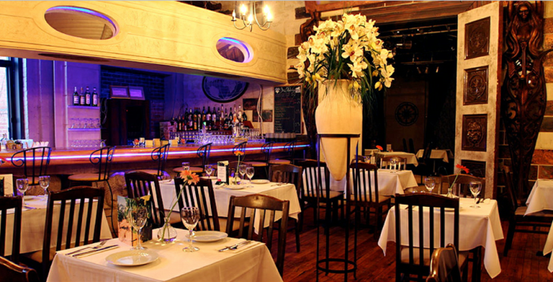
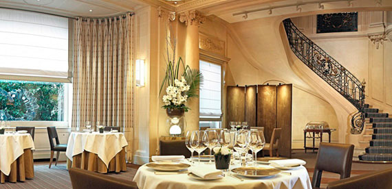

Франция является излюбленным местом многих тысяч гурманов, которые стремятся сюда за величайшими деликатесами и потрясающим вином. Конечно, большинство самых изысканных и роскошных ресторанов находится здесь, во Франции. Именно здесь вы сможете попробовать настоящие шедевры французской кухни от известнейших шеф-поваров местных ресторанов, заслуживших статуса звезды Мишлена.
Этот ресторан занимает почетное первое место во Франции и третье в списке 50 лучших ресторанов мира. Поваром и владельцем ресторана является Пьер Гарньер, получивший три звезды Мишлена. Расположен знаменитый ресторан в отеле Balzac на Елисейских Полях. Авторская кухня прославившегося на весь мир повара предлагает гурманам уникальные блюда фьюжн-кухни. Пьер Гарньер любит экспериментировать и сочетать порой совершенно экзотические ингредиенты. Всем клиентам ресторана предоставляется на выбор 3 разных меню: дневное, дегустационное и выбор блюд по основной карте. Меню постоянно обновляется.
Большой наплыв посетителей делает этот ресторан заветным желанием, которого нужно добиваться долгие месяцы заранее, чтобы попасть в это удивительное заведение. Каждый гурман должен хоть раз в жизни попробовать блюда от Пьера Гарньер.
Это один из лучших и почетных Парижских ресторанов, который завоевал множество сердец истинных гурманов мира. В переводе с французского название заведения означает «Серебряная башня». Ранее здесь находился монастырь бенедиктинцев, где и располагалась одноименная башня. С момента возникновения на этом месте прекрасного ресторанного комплекса сюда стали стекаться многие знаменитости и монархи, которые восторгались вкуснейшими блюдами шеф-повара. Сегодня рестораном владеет Андре Террайль. Шеф-поваром ресторана является легендарный и талантливый Стефан Хоссан, заслуживший множество восхитительных отзывов о приготовленных им произведениях кулинарного искусства.
Еще одним популярным рестораном Франции считается L’arpege, расположенным на одной из парижских улиц – Варенн. Владельцем и одновременно шеф-поваром ресторана является Алан Пассар, который приобрел громкую славу во всем мире. В своих блюдах повар использует только биологически чистую продукцию, выращенную на собственных садовых участках. Практически все меню ресторана состоит из блюд с овощами и травами, однако отсутствие мяса в заведение нисколько не расстраивает его гостей. Инновационные сочетания разнообразных овощей и фруктов делают его блюда не только неожиданными, но и фантастически вкусными.
Ресторан также имеет три звезды гида Мишлен и пользуется огромной популярностью, как у взыскательных гурманов, так и местных жителей города, хотя цены на подобные шедевры отличаются высоким уровнем.
Очередной ресторан Парижа, примыкающий к лидерам кулинарного искусства Франции. Сегодня ресторан работает только в вечернее время, отказавшись от завтраков и обедов в пользу восхитительных и непревзойденных ужинов. Здесь можно увидеть множество знаменитостей и мировых политиков. Гостям подают традиционную французскую кухню в ослепительном исполнении. Владельцем этого роскошного заведения является легендарный Пьер Карден. Красивый интерьер в стиле модерн с бархатом и зеркалами, романтическая атмосфера полумрака и другие детали декора приветствуют своих посетителей, предлагая им отведать вкуснейшие блюда Франции.
Обязательным условием посещения ресторана Maxim’s является дресс-код в стиле коктейль, ведь в зале всегда собирается уважаемая публика и высокопоставленные лица страны.
Это очаровательный ресторан Парижа с традиционной французской кухней, однако неожиданное сочетание разнообразных продуктов и специй делают здешние блюда уникальными. Ресторан располагается в бывшем особняке герцога де Морни с роскошными интерьерами и изысканной старинной мебелью. Шедевры, подаваемые гостям этого ресторана способны утолить голод и жажду новых вкусовых ощущений даже самого искушенного гурмана. Шеф-повар Taillevent доводит каждое блюдо до совершенства, используя в своем арсенале всю смелость своей фантазии. Кроме того, ресторан славится своей прекрасной картой вин, по которой официанты рекомендуют вам не менее четырех вариантов лучших сортов вина, наиболее подходящего под ваш заказ.
 Наверх